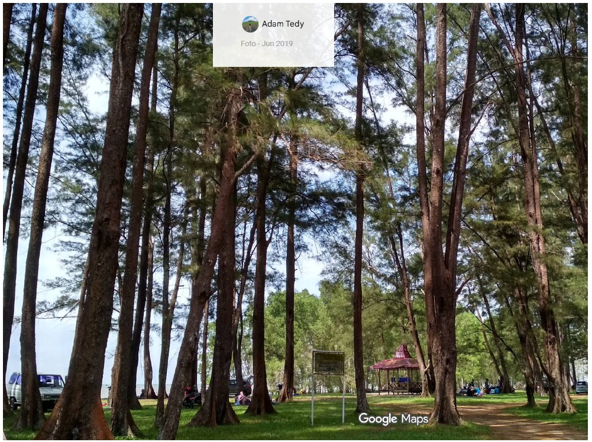

Kabar dari RTQ
Informasi dan kegiatan terbaru Rumah Tahfizhul Quran Al Imam Adz Dzahabiy.

Class Meeting Santri RTQ Al Imam Adz Dzahabiy
Kegiatan class meeting santri sebagai sarana kebersamaan, penyegaran, dan pengembangan potensi peserta didik.

Kegiatan Pendidikan RTQ
Informasi kegiatan pendidikan dan pembinaan peserta didik di RTQ Al Imam Adz Dzahabiy.
Informasi RTQ Al Imam Adz Dzahabiy
Berbagai informasi terbaru seputar kegiatan dan program pendidikan RTQ.